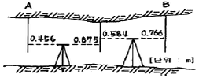
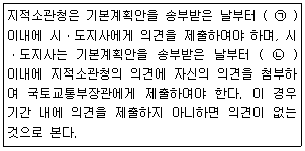

지적산업기사 (2017-05-07 기출문제)
1과목: 지적측량
1. 경위의 측량방법에 따른 세부측량에서 거리측정 단위는?
- 0.1cm
- 1cm
- 5cm
- 10cm
(정답률: 70%)

2. 축적 1:600 도면을 기초로 하여 축척 1:3000 도면을 작성할 때 필요한 1:600 도면의 매수는?(오류 신고가 접수된 문제입니다. 반드시 정답과 해설을 확인하시기 바랍니다.)
- 10매
- 15매
- 20매
- 25매
(정답률: 84%)
3. 축척이 1:1200인 지역에서 전자면적측정기에 따른 면적을 도상에서 2회 측정한 결과가 654.8m2, 655.2m2이었을 때 평균치를 측정 면적으로 하기 위하여 교차는 얼마 이하이어야 하는가?
- 16.2m2
- 17.2m2
- 18.2m2
- 19.2m2
(정답률: 58%)
4. 다음 중 지적측량을 하여야 하는 경우로 옳지 않은 것은?
- 지적측량성과를 검사하는 경우
- 지적기준점을 정하는 경우
- 분할된 도로의 필지를 합병하는 경우
- 경계점을 지상에 복원하는 경우
(정답률: 86%)
5. 평판측량의 오차 중 표정오차에 해당하는 것은?
- 구심오차
- 외심오차
- 시준오차
- 경사분획 오차
(정답률: 63%)
6. 정오차에 대한 설명으로 틀린 것은?
- 원인과 상태를 알면 일정한 법칙에 따라 보정할 수 있다.
- 수학적 또는 물리적인 법칙에 따라 일정하게 발생한다.
- 조건과 상태가 변화하면 그 변화량에 따라 오차의 양도 변화하는 계통오차이다.
- 일반적으로 최소제곱법을 이용하여 조정한다.
(정답률: 78%)
7. 지적삼각보조점측량 시 기초가 되는 점이 아닌 것은?
- 지적도근점
- 위성기준점
- 지적삼각점
- 지적삼각보조점
(정답률: 56%)
8. 지적도의 축척이 1:600인 지역에서 0.7m2인 필지의 지적공부 등록면적은?
- 0m2
- 0.5m2
- 0.7m2
- 1m2
(정답률: 76%)
9. 지적도 일람도에서 지방도로 이상을 나타내는 선은?
- 검은색 0.1mm
- 남색 0.1mm
- 검은색 0.2mm
- 붉은색 0.2mm
(정답률: 66%)
10. 배각법에 의한 지적도근측량 결과, 출발방위각이 47°32‘52“, 변의 수가 11, 도착방위각이 251°24’20”, 관측값의 합이 2003°50‘40“일 때 측각오차는?
- 38초
- -38초
- 48초
- -48초
(정답률: 54%)
11. 경위의측량방법에 따른 지적삼각점의 관측에서 수평각의 측각공차 중 기지각과의 차에 대한 기준은?
- ±30초 이내
- ±40초 이내
- ±50초 이내
- ±60초 이내
(정답률: 62%)
12. 축척 1:500인 지역에서 측판측량을 교회법으로 실시할 때 방향선의 지상거리는 최대 얼마 이하로 하여야 하는가?
- 25m
- 50m
- 75m
- 100m
(정답률: 70%)
13. 기지점 A를 측점으로 하거 전방교회법의 요령으로 다른 기지에 의하여 측판을 표정하는 측량방법은?
- 방향선법
- 원호교회법
- 측방교회법
- 후방교회법
(정답률: 73%)
14. 지적측량 시행규칙에 따른 지적측량의 구분으로 옳은 것은?
- 삼각측량과 세부측량
- 경위의측량과 평판측량
- 삼각측량과 도근측량
- 기초측량과 세부측량
(정답률: 86%)
15. 광파기 측량방법과 다각망도선법에 의한 지적삼각보조점의 관측에 있어 도선별 평균방위각과 관측방위각의 폐색오차 한계는? (단, n은 폐색변을 포함한 변의 수를 말한다.)
- ±√n초 이내
- ±1.5√n초 이내
- ±10√n초 이내
- ±20√n초 이내
(정답률: 67%)
16. 경계점좌표등록부 시행지역에서 경계점의 지적측량성과와 검사 성과의 연결교차 허용범위 기준으로 옳은 것은?
- 0.01m 이내
- 0.1m 이내
- 0.15m 이내
- 0.20m 이내
(정답률: 57%)
17. 지적도근점측량의 도선 구분으로 옳은 것은?
- 1등도선은 가ㆍ나ㆍ다 순으로 표기하고, 2등도선은 ㄱㆍㄴㆍㄷ 순으로 표기한다.
- 1등도선은 가ㆍ나ㆍ다 순으로 표기하고, 2등도선은 ⑴ㆍ⑵ㆍ⑶ 순으로 표기한다.
- 1등도선은 ㄱㆍㄴㆍㄷ 순으로 표기하고, 2등도선은 가ㆍ나ㆍ다 순으로 표기한다.
- 1등도선은 ⑴ㆍ⑵ㆍ⑶ 순으로 표기하고, 2등도선은 가ㆍ나ㆍ다 순으로 표기한다.
(정답률: 85%)
18. 표고(H)가 5m인 두 지점 간 수평거리를 구하기 위해 평판측량용 조준의로 두 지점 간 경사도를 측정하여 경사분획 +6을 구했다면, 이 두 지점 간 수평거리는?
- 62.5m
- 63.3m
- 82.5m
- 83.3m
(정답률: 42%)
19. 평판측량방법으로 세부측량을 하는 경우, 축척 1:1200인 지역에서 도상에 영향을 미치지 않는 지상거리의 허용범위는?
- 5cm
- 12cm
- 15cm
- 20cm
(정답률: 79%)
20. 다각망도선법으로 지적도근점측량을 실시하는 경우 옳지 않은 것은?
- 3점 이상의 기지점을 포함한 폐합다각방식에 의한다.
- 1도선의 점의 수는 20점 이하로 한다.
- 경위의 측량방법이나 전파기 또는 광파기 측량방법에 의한다.
- 1도선이란 기지점과 교점간 또는 교점과 교점간을 말한다.
(정답률: 66%)
2과목: 응용측량
21. 교호수준측량을 통해 소거할 수 있는 오차로 옳은 것은?
- 레벨의 불완전 조정으로 인한 오차
- 표척의 이음매 불완전에 의한 오차
- 관측자의 오독에 의한 오차
- 표척의 기울기 오차
(정답률: 60%)
22. 도로에 사용하는 클로소이드(clothoid) 곡선에 대한 설명으로 틀린 것은?
- 완화곡선의 일종이다.
- 일종의 유선형 곡선으로 종단곡선에 주로 사용된다.
- 곡선길이에 반비례하여 곡률반지름이 감소한다.
- 차가 일정한 속도로 달리고 그 앞바퀴의 회전속도를 일정하게 유지할 경우의 운동궤적과 같다.
(정답률: 48%)
23. 단일 노선의 폐합수준측량에서 생긴 오차가 허용오차 이하일 때, 폐합오차를 각 측점에 배부하는 방법으로 옳은 것은?
- 출발점에서 그 측점까지의 거리에 비례하여 배부한다.
- 각 측점간의 관측거리의 제곱근에 반비례하여 배부한다.
- 관측한 측점 수에 따라 등분배하여 배부한다.
- 측점간의 표고에 따라 비례하여 배부한다.
(정답률: 49%)
24. 내부표정에 대한 설명으로 옳은 것은?
- 입체 모델을 지상 기준점을 이용하여 축척 및 경사 등을 조정하여 대상물의 좌표계와 일치시키는 작업이다.
- 독립적으로 이루어진 입체 모델을 인접 모델과 축척 등을 일치시키는 작업이다.
- 동일 대상을 촬영한 후 한 쌍의 좌우 사진 간에 촬영 시와 같게 투영관계를 맞추는 작업을 말한다.
- 사진 좌표의 정확도를 향상시키기 위해 카메라의 렌즈와 센서에 대한 정확한 제원을 산출하는 과정이다.
(정답률: 43%)
25. 삼각형 세변의 길이가 a=30m, b=15m, c=20m일 때 이 삼각형의 면적은?
- 32.50m2
- 133.32m2
- 325.00m2
- 1333.20m2
(정답률: 70%)
26. 도로에서 경사가 5%일 때 높이차 2m에 대환 수평거리는?
- 20m
- 25m
- 40m
- 50m
(정답률: 56%)
27. 지형측량의 등고선에 대한 설명으로 틀린 것은?
- 주곡선은 기본이 되는 등고선으로 가는 실선으로 표시한다.
- 간곡선의 간격은 조곡선 간격의 1/2로 한다.
- 조곡선은 주곡선과 간곡선 사이에 짧은 파선으로 표시한다.
- 계곡선은 주곡선 5개마다 굵은 실선으로 표시한다.
(정답률: 59%)
28. 수준측량의 용어에 대한 설명으로 틀린 것은?
- 전시는 기지점에 세운 표척의 눈금을 읽은 값이다.
- 기계고는 기준면으로부터 망원경의 시준선까지의 높이이다.
- 기계고는 지반고와 후시의 합으로 구한다.
- 중간점은 다른 점에 영향을 주지 않는다.
(정답률: 49%)
29. 완화곡선의 성질에 대한 설명으로 옳은 것은?
- 완화곡선 시점에서 곡선반지름은 무한대이다.
- 완화곡선의 접선은 시점에서 원호에 접한다.
- 완화곡선 종점에서 곡선반지름은 0이 된다.
- 완화곡선의 곡선반지름과 슬랙의 감소율은 같다.
(정답률: 59%)
30. 항공사진의 입체시에서 나타나는 과고감에 대한 설명으로 옳지 않은 것은?
- 인공적인 입체시에서 과장되어 보이는 정도를 말한다.
- 사진 중심으로부터 멀어질수록 방사상으로 발생된다.
- 평면축척에 비해 수직축척이 크게 되기 때문이다.
- 기선 고도비가 커지면 과고감도 커진다.
(정답률: 43%)
31. 그림과 같이 터널 내 수준측량을 하였을 경우 A점의 표고가 156.632m라면 B점의 표고는?

- 156.869m
- 157.233m
- 157.781m
- 158.401m
(정답률: 60%)
32. 항공삼각측량에서 사진좌표를 기본단위로 공선조건식을 이용하는 방법은?
- 에어로 폴리곤법(aeropolygon triangulation)
- 스트립조정법(strip aerotriangulation)
- 독립모형법(independenyt model method)
- 광속조정법(bundle adjustment)
(정답률: 60%)
33. 축척 1:25000 지형도에서 높이차가 120m인 두 점 사이의 거리가 2cm라면 경사각은?
- 13°29‘45“
- 13°53‘12“
- 76°06‘48“
- 76°30‘15“
(정답률: 39%)
34. 원곡선에서 교각 I=40°, 반지름 R=150m, 곡선시점 B.C=No.32+4.0m일 때, 도로 기점으로부터 곡선종점 E.C까지의 거리는? (단, 중심말뚝 간격은 20m)
- 104.7m
- 138.2m
- 744.7m
- 748.7m
(정답률: 39%)
35. 터널 내 기준점측량에서 기준점을 보통 천장에 설치하는 이유로 틀린 것은?
- 파손될 염려가 적기 때문에
- 발견하기 쉽게 하기 위하여
- 터널시공의 조명으로 사용하기 위하여
- 운반이나 기타 작업에 장애가 되지 않게 하기 위하여
(정답률: 73%)
36. GNSS의 제어부분에 대한 설명으로 옳은 것은?
- 시스템을 구성하는 위성을 의미하며, 위성의 개발, 제조, 발사 등에 관한 업무를 담당한다.
- 결정된 위치를 활용한 다양한 소프트웨어의 개발 등의 응용분야를 의미한다.
- 위성에 대한 궤도모니터링, 위성의 상태파악 및 각종 정보의 갱신 등의 업무를 담당한다.
- 위성으로부터 수신된 신호로부터 위치를 결정하며 이를 위한 다양한 장치를 포함한다.
(정답률: 66%)
37. 여러 기존의 수신기로부터 얻어진 GNSS 측량 자료를 후처리하기 위한 표준형식은?
- RTCM-SC
- NMEA
- RTCA
- RINEX
(정답률: 71%)
38. 태양 광선이 서북쪽에서 비친다고 가정하고, 지표의 기복에 대해 명암으로 입체감을 주는 지형 표시 방법은?
- 음영법
- 단채법
- 점고법
- 등고선법
(정답률: 84%)
39. 촬영고도가 2100m이고 인접 중복사진의 주점기선 길이는 70mm일 때 시차차 1.6mm인 건물의 높이는?
- 12m
- 24m
- 48m
- 72m
(정답률: 61%)
40. GNSS 측량에서 기준점측량(지적삼각점) 방식으로 옳은 것은?
- Stop & Go 측량방식
- Kinrmatic 측량방식
- RTK 측량방식
- Static 측량방식
(정답률: 76%)
3과목: 토지정보체계론
41. 메타데이터의 특징으로 틀린 것은?
- 대용량의 데이터를 구축하는 시간과 비용을 절감할 수 있다.
- 공간정보 유통의 효율성을 제고한다.
- 시간이 지남에 따라 데이터의 기본 체계를 변경하여 변화된 데이터를 실시간으로 사용자에게 제공한다.
- 데이터의 공유화를 촉진시킨다.
(정답률: 64%)
42. 다음 중 토지정보시스템의 범주에 포함되지 않는 것은?
- 경영정책자료
- 시설물에 관한 자료
- 지적관련 법령자료
- 토지측량자료
(정답률: 76%)
43. 벡터데이터 모델과 래스터데이터 모델에 대한 설명으로 틀린 것은?
- 벡터데이터 모델:점과 선의 형태로 표현
- 래스터데이터 모델:지리적 위치를 X, Y 좌표로 표현
- 래스터데이터 모델:그리드 형태로 표현
- 벡터데이터 모델:셀의 형태로 표현
(정답률: 64%)
44. 속성데이터와 공간데이터를 연계하여 통합관리할 때의 장점이 아닌 것은?
- 데이터의 조회가 용이하다.
- 데이터의 오류를 자동 수정할 수 있다.
- 공간적 상관관계가 있는 자료를 볼 수 있다.
- 공간자료와 속성자료를 통합한 자료분석, 가공, 자료갱신이 편리하다.
(정답률: 80%)
45. 데이터 언어에 대한 설명으로 틀린 것은?
- 데이터 제어어(DCL)는 데이터를 보호하고 관리하는 목적으로 사용한다.
- 데이터 조작어(DML)에는 질의어가 있으며, 질의어는 절차적(Procedural)데이터 언어이다.
- 데이터 정의어(DDL)는 데이터베이스를 정의하거나 수정할 목적으로 사용한다.
- 데이터 언어는 사용 목적에 따라 데이터 정의어, 데이터 조작어, 데이터 제어어로 나누어진다.
(정답률: 63%)
46. 다음의 지적도 종류 중에서 지형과의 부합도가 가장 높은 도면은?
- 개별지적도
- 연속지적도
- 편집지적도
- 건물지적도
(정답률: 52%)
47. 수치영상의 복잡도를 감소하거나 영상 매트릭스의 편차를 줄이는데 사용하는 격자기반의 일반화 과정은?
- 필터링
- 구조의 축소
- 영상재배열
- 모자이크 변환
(정답률: 66%)
48. 지적도면전산화의 기대효과로 틀린 것은?
- 지적도면의 효율적 관리
- 토지관련 정보의 인프라 구축
- 신속하고 효율적인 대민서비스 제공
- 지적도면 정보 유통을 통한 이윤 창출
(정답률: 83%)
49. 한국토지정보시스템(KLIS)에서 지적공부관리시스템의 구성 메뉴에 해당되지 않는 것은?
- 특수업무 관리부
- 측량업무 관리부
- 지적기준점 관리
- 토지민원 발급
(정답률: 33%)
50. 다음 중 벡터구조의 요소인 선(line)에 대한 설명으로 틀린 것은?
- 지도상에 표현되는 1차원적 요소이다.
- 길이와 방향을 가지고 있다.
- 일반적으로 면적을 가지고 있다.
- 노드에서 시작하여 노드에서 끝난다.
(정답률: 74%)
51. 도시정보체계(UIS:Urban Information System)을 구축할 경우의 기대효과로 옳지 않은 것은?
- 도시행정 업무를 체계적으로 지원할 수 있다.
- 각종 도시계획을 효율적이고 과학적으로 수립 가능하다.
- 효율적인 도시관리 및 행정서비스 향상의 정보 기반구축으로 시설물을 입체적으로 관리할 수 있다.
- 도시 내 건축물의 유지 보수를 위한 재원확보와 조세 징수를 위해 최적화된 시스템을 이용할 수 있게 한다.
(정답률: 69%)
52. 다음 중 지적전산자료를 이용 또는 활용하고자 하는 자가 관계 중앙행정기관의 장에게 제출하여야 하는 심사 신청서에 포함시켜야 할 내용으로 틀린 것은?
- 자료의 공익성 여부
- 자료의 보관기관
- 자효의 안전관리대책
- 자료의 제공방식
(정답률: 50%)
53. 데이터의 가공에 대한 설명으로 틀린 것은?
- 데이터의 가공에는 분리, 분할, 합병, 폴리곤 생성, 러버시팅(Rubber Sheeting), 투영법 및 좌표계변환 등이 있다.
- 분할은 하나의 객체를 두 개 이상으로 나누는 것으로 객체의 분할 전과 후에 도형데이터와 링크된 속성테이블의 구조는 그대로 유지할 수 있다.
- 합병은 처음에 두 개로 만들어진 인접한 객체를 하나로 만드는 것으로 지적도의 도곽을 접합할 때에도 사용되며 합병할 두 객체와 링크된 속성테이블이 같아야 한다.
- 러버시팅은 자료의 변형 없이 축척의 크기만 달라지고 모양은 유지하므로 경계복원에 영향을 미치지 않는다.
(정답률: 69%)
54. 지적전산자료의 이용ㆍ활용에 대한 승인권자에 해당하지 않는 자는?
- 국토지리정보원장
- 국토교통부장관
- 시ㆍ도지사
- 지적소관청
(정답률: 74%)
55. 디지타이저를 이용한 도형자료의 취득에 대한 설명으로 틀린 것은?
- 기존도면을 입력하는 방법을 사용할 때에는 보관과정에서 발생할 수 있는 불규칙한 신축등으로 인환 오차를 제거하거나 축소할 수 있으므로 현장측량방법보다 정확도가 높다.
- 디지타이징의 효율성은 작업자의 숙련도에 따라 크게 좌우되며 스캐닝과 비교하여 도면의 보관상태가 좋지 않은 경우에도 입력이 가능하다.
- 디지타이징을 이용한 입력은 복사된 지적도를 디지타이징하여 벡터자료파일을 구축하는 것이다.
- 디지타이징은 디지타이저라는 테이블에 컴퓨터와 연결된 커서를 이용하여 필요한 객체의 형태를 컴퓨터에 입력시키는 것으로, 해당 객체의 형태를 따라서 X, Y 좌표값을 컴퓨터에 입력시키는 방법이다.
(정답률: 58%)
56. 기존의 종이도면을 직접 벡터데이터로 입력할 수 있는 작업으로 해드업방법이라고도 하는 것은?
- 스캐닝
- 디지타이징
- key-in
- CAD 작업
(정답률: 77%)
57. 다목적 지적의 3개 기본요소만으로 올바르게 묶여진 것은?
- 보조 중첩도, 기초점, 지적도
- 측지 기준망, 기본도, 지적도
- 대장, 도면, 수치
- 지적도, 임야도, 기초점
(정답률: 80%)
58. 지적재조사사업의 필요성 및 목적이 아닌 것은?
- 토지의 경계복원능력을 향상시키기 위함이다.
- 지적 불부합지 과다 문제를 해소하기 위함이다.
- 지적관리 인력의 확충과 기구의 규모 확장을 위함이다.
- 능률적인 지적관리체제로의 개선을 위함이다.
(정답률: 76%)
59. GIS, CAD 자료, 비디오, 영상 등의 다중매체와 같은 복잡한 자료 유형을 지원하는데 적합한 데이터베이스 방식은?
- 네트워크형 데이터베이스
- 계층형 데이터베이스
- 관계형 데이터베이스
- 객체지향형 데이터베이스
(정답률: 63%)
60. 연속적인 면의 단위를 나타내는 2차원 표현 요소로, 래스터데이터를 구성하는 가장 작은 단위는?
- 격자셀
- 선
- 절점
- 점
(정답률: 80%)
4과목: 지적학
61. 지목의 부호 표시가 각각 ‘유’와 ‘장’인 것은?
- 유지, 공장용지
- 유원지, 공원지
- 유지, 목장용지
- 유원지, 공장용지
(정답률: 75%)
62. 소유권에 대한 설명으로 옳은 것은?
- 소유권은 물권이 아니다.
- 소유권은 제한 물권이다.
- 소유권에는 존속기간이 있다.
- 소유권은 소멸시효에 걸리지 않는다.
(정답률: 61%)
63. 지적정리 시 소유자의 신청에 의하지 않고 지적소관청이 직권으로 정리하는 사항은?
- 분할
- 신규등록
- 지목변경
- 행정구역 개편
(정답률: 58%)
64. 오늘날 지적측량의 방법과 절차에 대하여 엄격한 법률적인 규제를 가하는 이유로 가장 옳은 것은?
- 기술적 변화 대처
- 법률적인 효력유지
- 측량기술의 발전
- 토지등록정보 복원유지
(정답률: 83%)
65. 우리나라에서 사용되는 지번부여 방법이 아닌 것은?
- 기우식
- 단지식
- 사행식
- 순차식
(정답률: 69%)
66. 다음 중 토지조사사업 당시 확정된 소유자가 서로 다른 토지 간에 사정된 구획선을 무엇이라고 하였는가?
- 경계선
- 강계선
- 지역선
- 지계선
(정답률: 69%)
67. 다음 중 도곽선의 역할로 가장 거리가 먼 것은?
- 기초점 전개의 기준
- 지적 원점 결정의 기준
- 도면 신축량 측정의 기준
- 인접 도면과 접합의 기준
(정답률: 54%)
68. 지적 이론의 발생설 중 이론적 근거가 다른 것은?
- 나일로메터
- 둠즈데이북
- 장적문서
- 지세대장
(정답률: 64%)
69. 2필지 이상의 토지를 합병하기 위한 조건이라고 볼 수 없는 것은?
- 지반이 연속되어 있어야 한다.
- 지목이 동일하여야 한다.
- 축척이 달라야 한다.
- 지번부여지역이 동일하여야 한다.
(정답률: 84%)
70. 다음 중 지적공부에 등록하는 토지의 물리적 현황과 가장 거리가 먼 것은?
- 지번과 지목
- 등급과 소유자
- 경계와 좌표
- 토지소재와 면적
(정답률: 73%)
71. 근대적인 지적제도의 토지대장이 처음 만들어진 시기는?
- 1910년대
- 1920년대
- 1950년대
- 1970년대
(정답률: 69%)
72. 다음 중 토지조사사업 당시 불복신립 및 재결을 행하는 토지소유권의 확정에 관한 최고의 심의기관은?
- 도지사
- 임의토지조사국장
- 고등토지조사위원회
- 임야조사위원회
(정답률: 72%)
73. 경계점좌표등록부에 등록되는 좌표는?
- UTM 좌표
- 경위도 좌표
- 구면직각 좌표
- 평면직각 좌표
(정답률: 66%)
74. 다음 중 지적의 기능으로 옳지 않은 것은?
- 지리적 요소의 결정
- 토지감정평가의 기초
- 도시 및 국토계획의 원천
- 토지기록의 법적효력과 공시
(정답률: 40%)
75. 다음 중 토지조사사업 당지 토지대장 정리를 위한 조사 자료에 해당하는 것은?
- 양안 및 지계
- 토지소유권증명
- 토지 및 건물대장
- 토지조사부 및 등급조사부
(정답률: 59%)
76. 조선시대의 양전법에 따른 저의 형태에서 직각삼각형 형태의 전의 명칭은?
- 방전(方田)
- 제전(梯田)
- 구고전(句股田)
- 요고전(腰鼓田)
(정답률: 70%)
77. 토지를 등록하는 기술적 행위에 따라 발생하는 효력과 가장 관계가 먼 것은?
- 공정력
- 구속력
- 추정력
- 확정력
(정답률: 75%)
78. 토지조사사업에서 조사한 내용이 아닌 것은?
- 토지의 가격
- 토지의 지질
- 토지의 소유권
- 토지의 외모(外貌)
(정답률: 68%)
79. 지적도 작성 방법 중 지적도면 자료나 영상자료를 래스터(Raster)방식으로 입력하여 수치화하는 장비로 옳은 것은?
- 스캐너
- 디지타이저
- 자동복사기
- 키보드
(정답률: 79%)
80. 토지표시 사항의 결정에 있어서 실질적 심사를 원칙으로 하는 가장 중요한 이유는?
- 소유자의 이해
- 결정사항에 대한 이의예방
- 거래안전의 국가적 책무
- 조세형평 유지
(정답률: 66%)
5과목: 지적관계
81. 다음 중 지적공부에 등록한 토지를 말소시키는 경우는?
- 토지의 형질을 변경하였을 때
- 화재로 인하여 건물이 소실될 때
- 수해로 인하여 토지가 유실되었을 때
- 토지가 바다로 된 경우로서 원상으로 회복될 수 없을 때
(정답률: 84%)
82. 평판측량방법 또는 전자평판측량방법으로 세부측량 시 측량준비파일에 작성하여야 하는 측량기하적 사항으로 옳지 않은 것은?
- 평판점ㆍ측정점 및 방위표정에 사용한 기지점 등에는 방향선을 긋고 실측한 거리를 기재한다.
- 평판점 및 측정점은 측량자는 직경 1.5,mm 이상 3mm 이하의 원으로 표시한다.
- 평판점의 결정 및 방위표정에 사용한 기지점은 측량자는 1변의 길이가 2mm와 3mm의 2중 삼각형으로 표시한다.
- 측량대상토지에 지상구조물 등이 있는 경우와 새로이 설정하는 경계에 지상건물 등이 걸리는 경우에는 그 위치현황을 표시하여야 한다.
(정답률: 60%)
83. 지목을 등록할 때 유원지로 설정하는 지목은?
- 경마장
- 남한산성
- 장충체육관
- 올림픽 컨트리클럽
(정답률: 67%)
84. 아래는 지적재조사에 관한 특별법에 따른 기본계획의 수립에 관한 내용이다. ()안에 들어갈 일자로 옳은 것은?

- ㉠ 10일 ㉡ 20일
- ㉠ 20일 ㉡ 30일
- ㉠ 30일 ㉡ 40일
- ㉠ 40일 ㉡ 50일
(정답률: 66%)
85. 지적업무처리규정상 전자평판측량을 이용한 지적측량결과도의 작성방법이 아닌 것은?
- 관측한 측정점의 왼쪽 상단에는 측정거리를 표시하여야 한다.
- 측정점의 표시는 측량자의 경우 붉은색 짧은 십자선(+)으로 표시한다.
- 측량성과파일에는 측량성과 결정에 관한 모든 사항이 수록되어 있어야 한다.
- 이미 작성되어 있는 지적측파일을 이용하여 측량할 경우에는 기존 측량파일 코드의 내용ㆍ규격ㆍ도식은 파란색으로 표시한다.
(정답률: 42%)
86. 새로 조성된 토지와 지적공부에 등록되어 있지 아니한 토지를 지적공부에 등록하는 것은?
- 등록전환
- 지목변경
- 신규등록
- 축척변경
(정답률: 84%)
87. 축척변경 시 확정공고에 대한 설명으로 옳지 않은 것은?
- 지적공부인 토지대장에 등록하는 때에는 확정공고 된 청산금조서에 의한다.
- 확정공고일에 토지의 이동이 있는 것으로 본다.
- 청산금의 지급이 완료된 때에는 확정공고를 하여야 한다.
- 확정공고를 하였을 때에는 확정된 사항을 지적공부에 등록한다.
(정답률: 42%)
88. 공간정보의 구축 및 관리 등에 관한 법률상 지적측량을 실시하여야 하는 경우로 옳지 않은 것은?
- 지적측량성과를 검사하는 경우
- 지형등고선의 위치를 측정하는 경우
- 경계점을 지상에 복원하는 경우
- 지적기준점을 정하는 경우
(정답률: 43%)
89. 다음 중 결번대장의 등재사항이 아닌 것은?
- 결번 사유
- 결번 연월일
- 결번 해지일
- 결번된 지번
(정답률: 71%)
90. 다음 중 지적측량업자의 업무 범위에 속하지 않는 것은?
- 지적측량성과 검사를 위한 지적측량
- 사업지구에서 실시하는 지적재조사측량
- 경계점좌표등록부가 있는 지역에서의 지적측량
- 도시개발사업 등이 끝남에 따라 하는 지적확정측량
(정답률: 58%)
91. 지적측량수행자가 손해배상책임을 보장하기 위하여 보증보험에 가입하여 보증설정을 하여야 할 금액의 기준으로 옳은 것은?
- 지적측량업자:3천만원 이상
- 지적측량업자:5천만원 이상
- 한국국토정보공사:20억원 이상
- 한국국토정보공사:10억원 이상
(정답률: 78%)
92. 지목을 지적도면에 등록하는 부호의 연결이 옳은 것은?
- 공원-공
- 하천-하
- 유원지-유
- 주차장-주
(정답률: 71%)
93. 지적측량의 적부심사를 청구할 수 없는 자는?
- 이해관계인
- 지적소관청
- 토지소유자
- 지적측량수행자
(정답률: 43%)
94. 지적업무처리규정상 지적공부 관리방법이 아닌 것은? (단, 부동산종합공부시스템에 따른 방법을 제외한다.)
- 지적공부는 지적업무담당공무원 외에는 취급하지 못한다.
- 지적공부 사용을 완료한 때에는 간이보관 상자를 비치한 경우에도 즉시 보관 상자에 넣어야 한다.
- 도면은 항상 보호대에 넣어 취급하되, 말거나 접지 못하며 직사광선을 받으면 아니 된다.
- 지적공부를 지적서고 밖으로 반출하고자 할 때에는 훼손이 되지 않도록 보관ㆍ운반함 등을 사용한다.
(정답률: 68%)
95. 다음 중 지적소관청이 토지의 표시 변경에 관한 등기를 할 필요가 있는 경우, 관할 등기관서에 그 등기를 촉탁하여야 하는 대상에 해당하지 않는 것은?
- 분할
- 신규등록
- 바다로 된 토지의 말소
- 행정구역 개편에 따른 지번변경
(정답률: 52%)
96. 축척변경 시행지역 안에서의 토지이동은 언제 있는 것으로 보는가?
- 촉탁등기시
- 청산금교부시
- 축척변경 승인신청시
- 축척변경확정공고일
(정답률: 69%)
97. 지적측량업의 영업정지대상이 되는 위반행위가 아닌 것은?
- 고의 또는 과실로 측량을 부정확하게 한 경우
- 정당한 사유없이 측량업의 등록을 한 날부터 계속하여 1년 이상 휴업한 경우
- 지적측량업자가 법에서 규정한 업무 범위를 위반하여 지적측량을 한 경우
- 거짓이나 그 밖의 부정한 방법으로 지적측량업의 등록을 한 경우
(정답률: 45%)
98. 다음 중 기본계획을 통지받은 지적소관청이 지적재조사사업에 관환 실시계획 수립 시 포함해야 하는 사항이 아닌 것은?
- 사업지구의 위치 및 면적
- 지적재조사사업의 시행기간
- 지적재조사사업비의 추산액
- 지적재조사사업의 연도별 집행계획
(정답률: 53%)
99. 철도, 역사, 차고, 공작창이 집단으로 위치할 경우 그 지목은?
- 철도, 차고는 철도용지이고, 역사는 대지, 공작창은 공장 용지이다.
- 역사만 대지이고, 나머지는 철도용지이다.
- 공작창만 공장용지이고, 나머지는 철도용지이다.
- 모두 철도용지이다.
(정답률: 67%)
100. 공간정보의 구축 및 관리 등에 관한 법률에 따른 ‘토지의 표시’에 해당하지 않는 것은?
- 경계
- 지번
- 소유자
- 면적
(정답률: 71%)